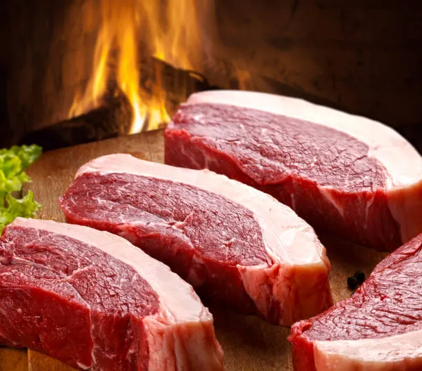

Home
Steak

This is steak. You cut a chunk of meat off of a cow and you throw it over a fire.
It's the best.
Ingredients:
- 1 inch thick picanha steak of any weight
- 2 shablaus of salt
- 2 shablaus of pepper
Directions:
- If frozen, let steak fully thaw in the fridge over night
- Take steak out of the fridge and let it get to room temperature (roughly 30 - 45 minutes)
- Using cast iron grill pan, pre heat pan to over 400 degrees Fahrenheit on Medium heat
- Season steak with salt and pepper and immediately add to hot cooking surface by slowly placing steak down away from your body
- Cook 3 minutes on each side to achieve Medium Rare
- Using tongs, remove from pan and let rest for 5 minutes